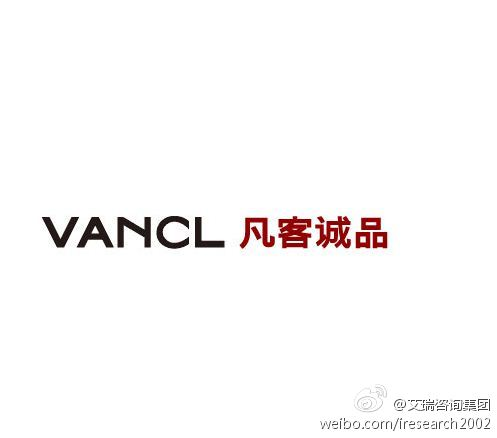
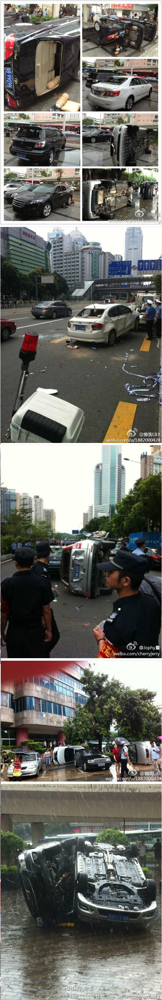

很匹配。恭喜。//@孙志岗Sunner:是的，网易公开课，这个平台有很大的发挥空间 //@何胤River: Sunner对教育的热爱和坚持真的好让人感动！！//@努力工作的亭:应该是网易公开课，这个比较符合sunner的教育理想吧 //@黄与晶:为什么是网易？@孙志岗Sunner:再见哈尔滨，再见哈工大，再见朋友们，再见爸妈。出发，目标，杭州，网易
回头查查俺有没有上黑名单。之前还以为凡客向Zappos学，鼓励用户多试多买呢。可能在中国，电商还玩不起这种服务。@艾瑞咨询:【凡客被曝设顾客黑名单 退换货超八成即拉黑】继春秋航空把“难缠”顾客列入黑名单不予服务后，以提供宽松退换货服务起家的电商——凡客诚品也推出了“黑名单”，被列入“恶意退货”级别的顾客将无法再次购物。此消息一出，立即引发消费者热议。网页链接 @新浪科技 
这个方式新颖。//@ZoomQuiet:#PyCon2012China#@PyConCN:第十二位PyConChina大会的个人捐赠者是来自浙江温州的孙亮，感谢对社区大会的支持！个人小额捐赠42元起，可以进入到cn.pycon.org官网-捐赠榜 嘉宾和志愿者也通过自己的独特贡献进入到捐赠榜。捐赠通过淘宝店实现： 立即捐赠:网页链接
为什么这么多年，反日的这帮家伙们就只会这么一招，打砸自己国人的财物?!@Happy张江:近期请童鞋们最好不要开日产车出去，大家都懂的～满目苍夷，受害的都是老百姓！这不是爱国，是犯罪！图BY众博友 
宗教里，贪婪一直做为人性弱点而鞭挞的，之前的经济中，商人们倾向于满足于赚取够自己过舒适生活的金钱。而资本主义精神是把赚取金钱和贪婪区别开，撇开了道德上的指责，把赚钱当作天职，是人人有义务去追求的自在目的。── 读《新教伦理与资本主义精神》
以往对美国的一些现象不解，那些富豪们"不择手段"地追逐财富，但同时也推动国家立法，征遗产税，把财富交给慈善组织。现在了解到，这些信念起源于清教徒: 努力工作是侍奉上帝的手段，合理使用财富，反对肉体欲望和迷恋身外财物。── 读《新教伦理与资本主义精神》
回复@BrokenWindows:让富人借慈善避税的那些法律是谁制定的呢? //@BrokenWindows:别那么轻信资本家冠冕堂皇的伪装,没这么简单.清教徒仅限于早期的英格兰移民后裔,而现在很多嚷嚷遗产税的美国富豪是犹太人.由于信仰原因,清教徒很少参与金融,富人远没有犹太人和爱尔兰人后裔多.捐钱做慈善的最重要的目的@Ada李力:以往对美国的一些现象不解，那些富豪们"不择手段"地追逐财富，但同时也推动国家立法，征遗产税，把财富交给慈善组织。现在了解到，这些信念起源于清教徒: 努力工作是侍奉上帝的手段，合理使用财富，反对肉体欲望和迷恋身外财物。── 读《新教伦理与资本主义精神》
 网页链接
网页链接